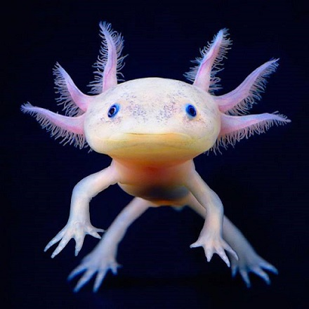

Strona główna
Quizy
Kwestionariusz osobowy
Quiz wiedzy o zwierzętach
1. Ile par odnóży mają pająki?
3 pary
4 pary
6 par
nie posiadają odnóży
2. Co to za zwierze?

szczupak
szympans
kałamarnica olbrzymia
aksolotl meksykański
3. Która z tych ryb jest słodkowodna?
leszcz
dorsz
śledź
flądra
4. Gdzie naturalnie występują żyrafy?
w Europie
w Afryce
w Azji
w Ameryce Północnej
5. Myszojeleń to:
góralek skalny
bóbr europejski
kanczyl srebrongrzbiety
wydra europejska
6. Na skutek czego świetliki świecą?
na skutek reakcji chemicznej
nie świecą, to złudzenie optyczne
po zjedzeniu odpowiedniego pokarmu
nie wiadomo
7. Jakiego smaku nie odczuwają koty?
ostrego
słodkiego
kwaśnego
gorzkiego
8. Dlaczego kameleony zmieniają kolor?
chcą uśpić czujność przeciwnika
kameleony nie zmieniają koloru
chcą się dostosować do otoczenia
w celu komunikacji i gdy zmienia się ich stan emocjonalny
9. Jakie zwierze ma więcej niż 7 kręgów szyjnych?
żyrafa
leniwiec
nosorożec
zebra
10. Gdzie występuje ptak - Kagu?
w Meksyku
w Tajlandii
na Haiti
na Nowej Kaledonii
Sprawdź swój wynik
X